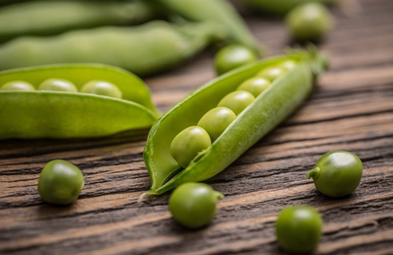

- Varietà: Zucchina chiara di Faenza
- Periodo di Semina: Marzo / Aprile
- Primo racolto: Fine Aprile
- Ultimo raccolto: Fine Luglio
- raccolto
| Dimensione |
Quantità |
| Piccole (10cm) |
16 |
| Medie (11-16cm) |
26 |
| Grandi(>160cm) |
9 |
| |
51 |
--Acquista Semi--
Piselli

American Wonder: Varietà media precoce come ciclo colturale